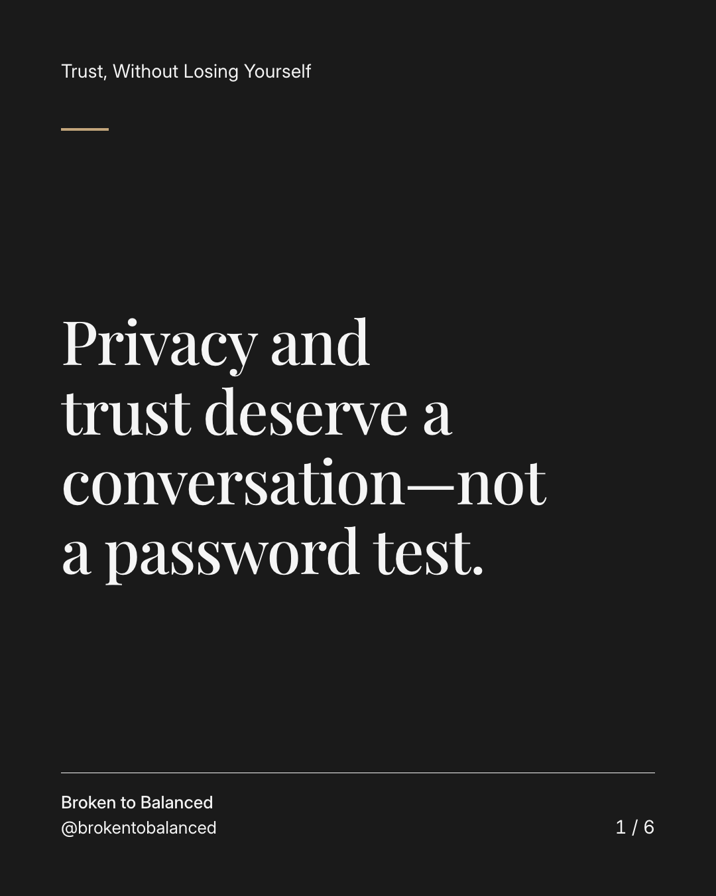
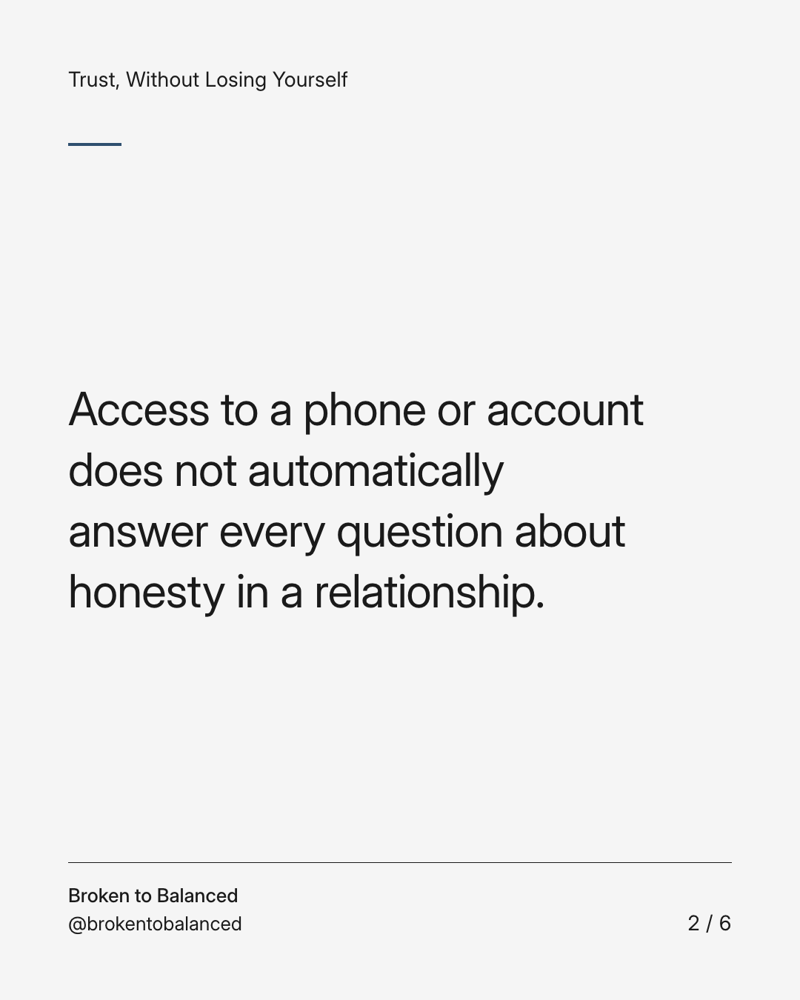
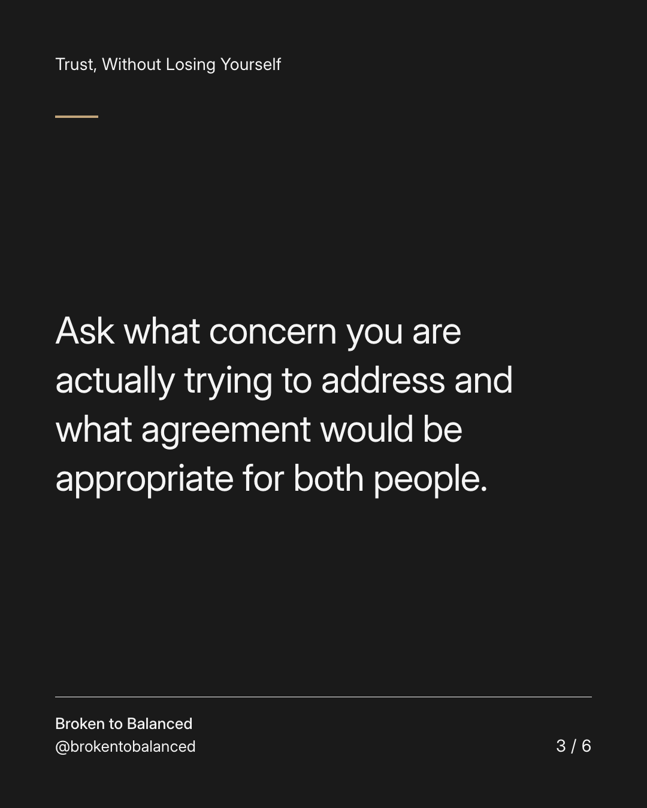
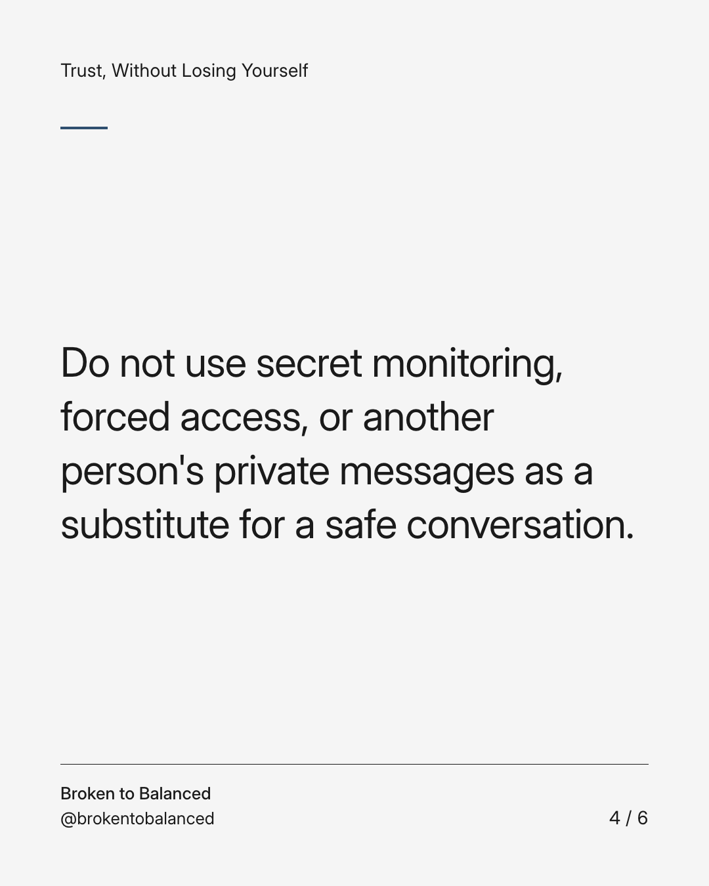
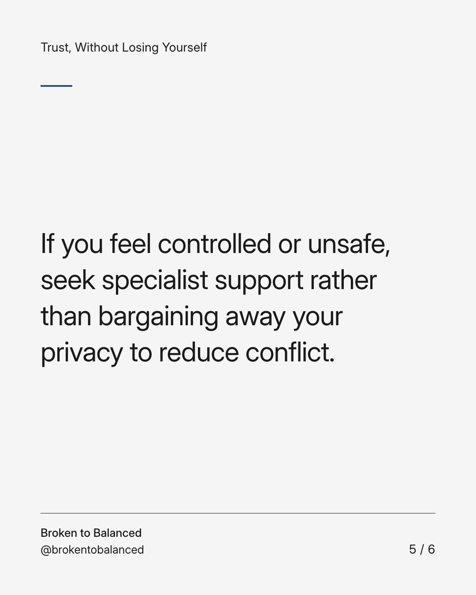
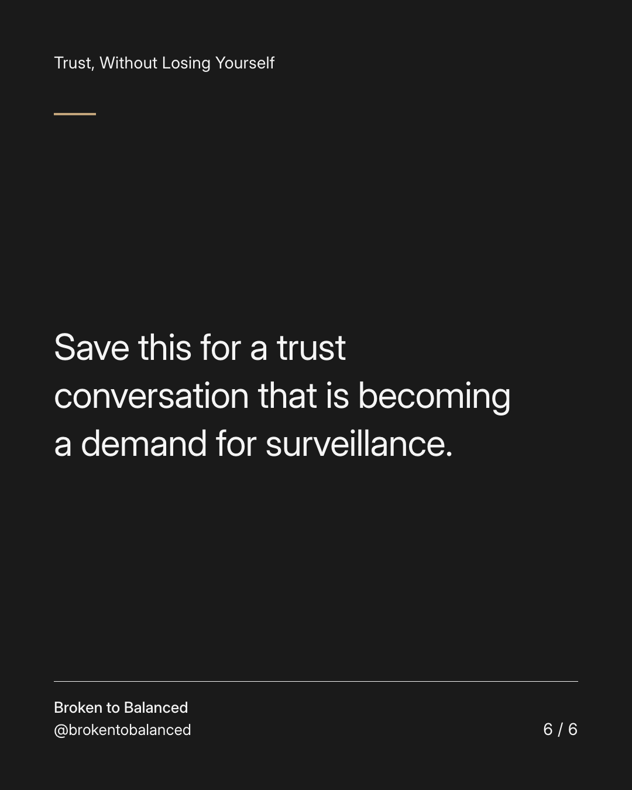

Exact text and accessibility text
Privacy and trust deserve a conversation—not a password test.
Slide 1 of 6. Privacy and trust deserve a conversation—not a password test.


Exact text and accessibility text
Access to a phone or account does not automatically answer every question about honesty in a relationship.
Slide 2 of 6. Access to a phone or account does not automatically answer every question about honesty in a relationship.


Exact text and accessibility text
Ask what concern you are actually trying to address and what agreement would be appropriate for both people.
Slide 3 of 6. Ask what concern you are actually trying to address and what agreement would be appropriate for both people.


Exact text and accessibility text
Do not use secret monitoring, forced access, or another person's private messages as a substitute for a safe conversation.
Slide 4 of 6. Do not use secret monitoring, forced access, or another person's private messages as a substitute for a safe conversation.


Exact text and accessibility text
If you feel controlled or unsafe, seek specialist support rather than bargaining away your privacy to reduce conflict.
Slide 5 of 6. If you feel controlled or unsafe, seek specialist support rather than bargaining away your privacy to reduce conflict.


Exact text and accessibility text
Save this for a trust conversation that is becoming a demand for surveillance.
Slide 6 of 6. Save this for a trust conversation that is becoming a demand for surveillance.
Exact caption
Plain-text fallback: select and copy the caption.